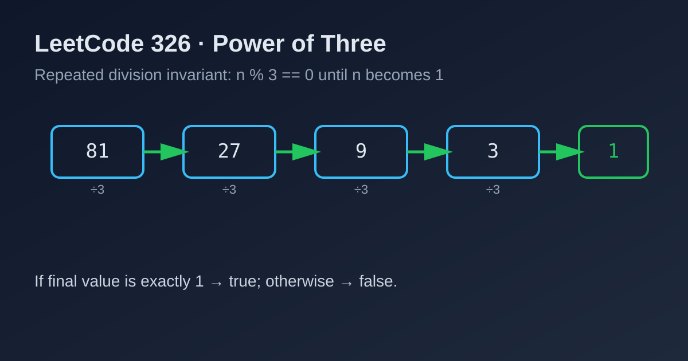

LeetCode 326: Power of Three (Repeated Division Invariant)
LeetCode 326MathNumber TheoryToday we solve LeetCode 326 - Power of Three.
Source: https://leetcode.com/problems/power-of-three/

English
Problem Summary
Given an integer n, return true if it is a power of three. In other words, check whether there exists an integer x such that n = 3^x.
Key Insight
If n is a power of three and n > 1, then it must be divisible by 3. Repeatedly dividing by 3 should eventually reach exactly 1.
Algorithm Steps
1) If n <= 0, return false.
2) While n % 3 == 0, do n /= 3.
3) Return whether n == 1.
Complexity Analysis
Time: O(log_3 n).
Space: O(1).
Common Pitfalls
- Forgetting to reject non-positive numbers.
- Returning true after one division only.
- Using floating-point logs and getting precision issues.
Reference Implementations (Java / Go / C++ / Python / JavaScript)
class Solution {
public boolean isPowerOfThree(int n) {
if (n <= 0) return false;
while (n % 3 == 0) {
n /= 3;
}
return n == 1;
}
}func isPowerOfThree(n int) bool {
if n <= 0 {
return false
}
for n%3 == 0 {
n /= 3
}
return n == 1
}class Solution {
public:
bool isPowerOfThree(int n) {
if (n <= 0) return false;
while (n % 3 == 0) {
n /= 3;
}
return n == 1;
}
};class Solution:
def isPowerOfThree(self, n: int) -> bool:
if n <= 0:
return False
while n % 3 == 0:
n //= 3
return n == 1/**
* @param {number} n
* @return {boolean}
*/
var isPowerOfThree = function(n) {
if (n <= 0) return false;
while (n % 3 === 0) {
n = Math.floor(n / 3);
}
return n === 1;
};中文
题目概述
给定整数 n，判断它是否为 3 的幂，也就是是否存在整数 x 使得 n = 3^x。
核心思路
如果 n 是 3 的幂且 n > 1，它一定能被 3 整除；不断除以 3，最终应当恰好变成 1。
算法步骤
1）若 n <= 0，直接返回 false。
2）当 n % 3 == 0 时，执行 n /= 3。
3）最后判断 n == 1。
复杂度分析
时间复杂度：O(log_3 n)。
空间复杂度：O(1)。
常见陷阱
- 忘记过滤非正数。
- 只除一次就返回，导致误判。
- 用浮点对数判断，容易出现精度误差。
多语言参考实现（Java / Go / C++ / Python / JavaScript）
class Solution {
public boolean isPowerOfThree(int n) {
if (n <= 0) return false;
while (n % 3 == 0) {
n /= 3;
}
return n == 1;
}
}func isPowerOfThree(n int) bool {
if n <= 0 {
return false
}
for n%3 == 0 {
n /= 3
}
return n == 1
}class Solution {
public:
bool isPowerOfThree(int n) {
if (n <= 0) return false;
while (n % 3 == 0) {
n /= 3;
}
return n == 1;
}
};class Solution:
def isPowerOfThree(self, n: int) -> bool:
if n <= 0:
return False
while n % 3 == 0:
n //= 3
return n == 1/**
* @param {number} n
* @return {boolean}
*/
var isPowerOfThree = function(n) {
if (n <= 0) return false;
while (n % 3 === 0) {
n = Math.floor(n / 3);
}
return n === 1;
};
Comments